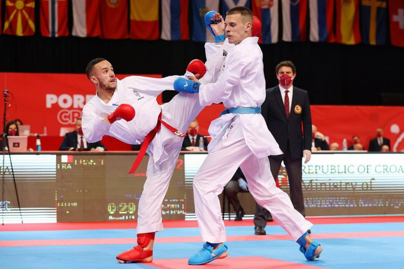

Les nouveaux sports aux JO et leurs perceptions

Du 26 juillet au 11 août 2024 se tiendront les JO de Paris, une compétition qui offre son lot de surprises à chaque édition.
Depuis des années, le nombre de sports pratiqués aux Jeux olympiques d’été ne cesse d’augmenter. En 1928, seulement 14 sports étaient recensés alors qu’en 2024, 32 sports sont prévus. Le programme olympique est donc en perpétuelle progression. Cependant, il est important de savoir que la soumission d’un sport implique une procédure minutieuse. La discipline en question est étudiée par le CIO (Comité international olympique), et si cette instance estime que l’ajout de ce sport est pertinent, alors ce dernier est validé. L’un des facteurs clé est sa pratique dans le monde. Une discipline pratiquée à une plus grande échelle sera plus facilement acceptée.
La compétition multisports que représentent les Jeux olympiques attire de plus en plus de monde chaque année, que ce soit en termes d’athlètes ou de spectateurs. Le divertissement est à son paroxysme.
Les Jeux sont en constante modernisation, ce qui permet à un public plus jeune de s’y intéresser. Lors de la dernière édition, à Tokyo, de nouvelles disciplines telles que le basket en 3 vs 3 ou le skateboard ont été à l’ordre du jour. Certains voient d’un mauvais œil l’institutionnalisation de ces nouvelles disciplines, avançant qu’elles dénaturent la compétition. D’autres sont simplement réticents au changement.
L’arrivée de nouvelles disciplines peut être objet de controverse. Le cyclisme en est un bon exemple. En 1985, des grimpeurs ont manifesté contre l’intronisation de leur sport aux Jeux olympiques. Ces derniers ne sont pas les seuls à vouloir conserver leur sport hors de cette compétition. Récemment, en 2015, des planchistes ont dénoncé la marchandisation de leur mode de vie. Malgré la réticence de ces athlètes, le surf a bel et bien été retenu pour les JO de Tokyo en 2020 et fait désormais partie des disciplines olympiques.
Bien que de nombreux sports fassent leur premier pas aux JO, d’autres disparaissent. En effet, d’anciennes disciplines sont remplacées par des nouvelles. Le renouvellement des sports peut s’avérer bénéfique pour des sports méconnus. Maria Izquierdo (présidente d’escalade Canada) se réjouit de ce mouvement : « Il y a un attrait pour les sports urbains sur les réseaux sociaux, majoritairement fréquentés par les jeunes. Il y a énormément de vues et d’intérêt suscités. On ne peut pas passer à côté de ça ». L’escalade, par exemple, fait partie des sports qui ont fait leur entrée lors des derniers Jeux.
Du côté des disciplines tombées au combat, le karaté, présent dans les Jeux mondiaux depuis 1981, est l’une des principales victimes. Face à son cousin, le Judo, le Karaté a perdu en intérêt d’année en année.
Lors des Jeux olympiques, sports riment avec chaises musicales.